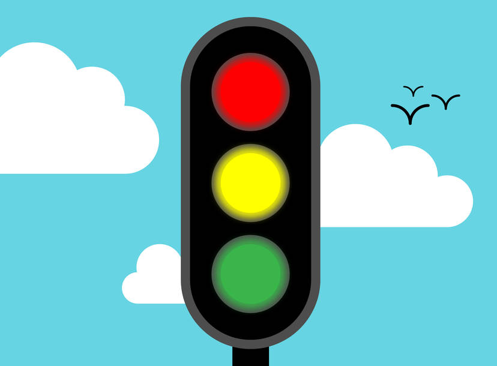

Select User :
{{item}}
Start
Enter Username :
Start
WELCOME {{UserName}}
Make your choices
Time of the Day
Morning
brightness_5
Afternoon
wb_sunny
Evening
brightness_4
Night
bedtime
Weather
Clear
local_florist
Rainy
cloud
Foggy
multiline_chart
Snow
ac_unit

Traffic Status
Low
speed
Medium
av_timer
High
slow_motion_video
Start